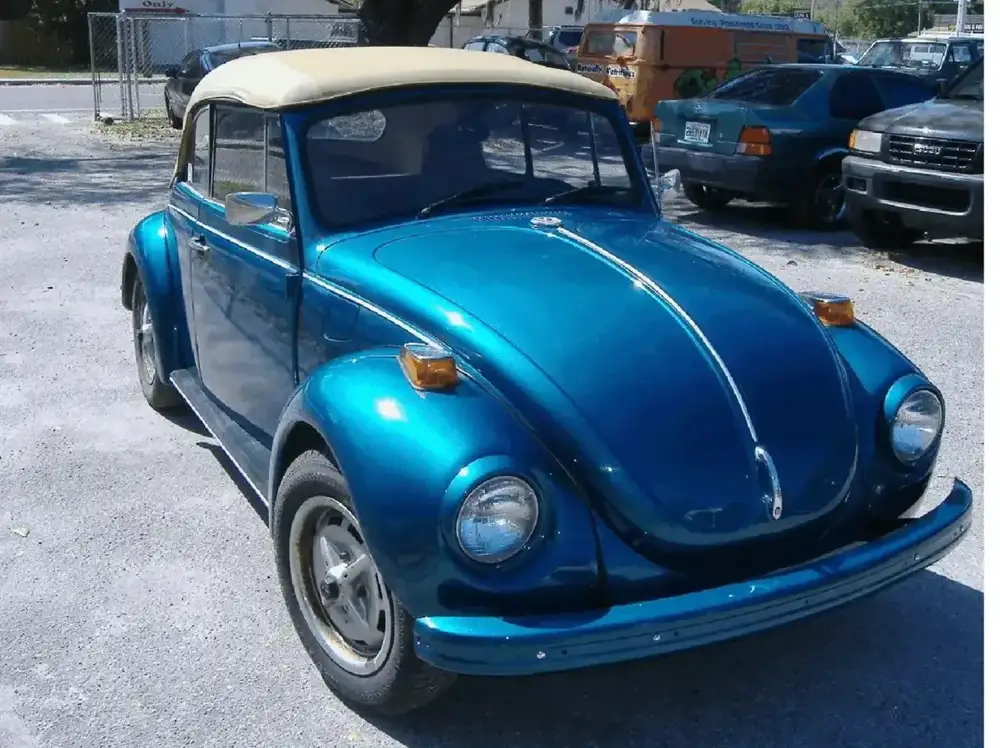
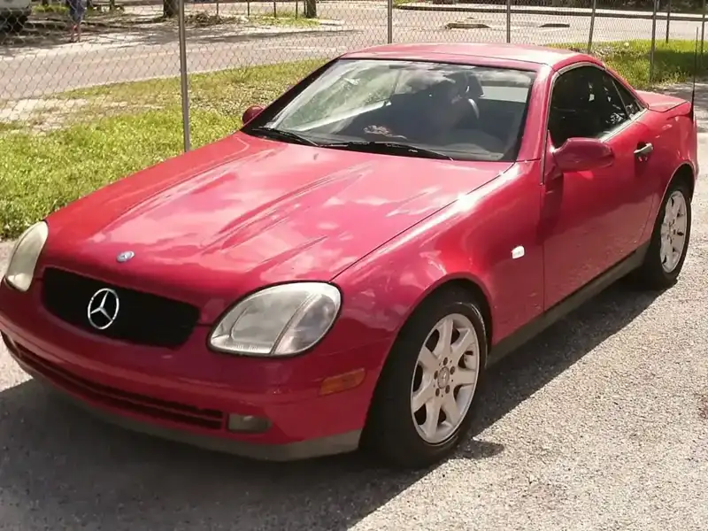
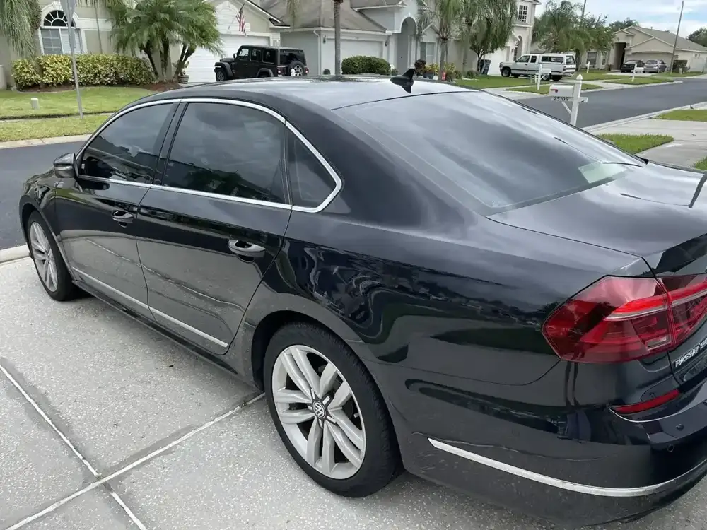
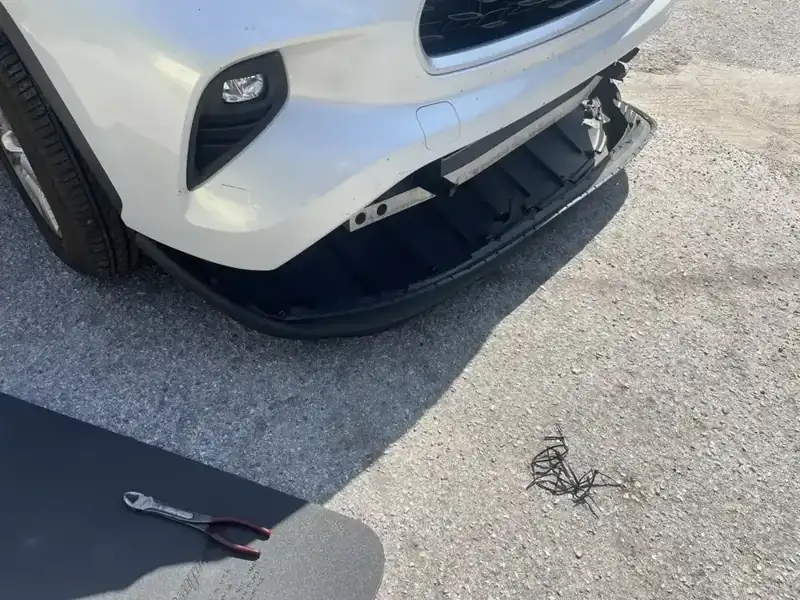

Foreign car repair · N 22nd St, Tampa
Foreign car repair since 1972.
A Tampa shop that explains the problem, is upfront about pricing and never pushes repairs you don't need.
Or call (813) 971-1725

Since 1972
Services
What we fix
Foreign car repair, vintage VW parts, batteries and used cars.
Foreign car repair
The shop specializes in foreign cars, from a Toyota bumper to a Mercedes roadster to a Mini.
- Imports
- Brakes
- Diagnosis
Volkswagen repair
VW work since 1972, from a family who grew up fixing Volkswagens.
- VW repair
- Vintage VWs
Vintage VW parts
A wide selection of parts for vintage Volkswagens. If a part isn't in stock, they work with vendors to find it.
- Restoration parts
- Hard-to-find parts
Battery and ignition
A battery that won't hold a charge, checked over and explained clearly.
- Battery service
- Ignition switch repair
Bodywork and bumpers
A customer had a front bumper replaced on a Toyota Highlander and says the job was excellent.
- Bumper replacement
Used cars
Hard-to-find cars, with the stock changing all the time. Ask what is on the lot.
- Hard-to-find cars
- Great service deals
What customers say
4.6 299 Google reviews
This is the best auto repair shop I’ve encountered in Tampa. After I dropped off my car, Jerry personally gave me a ride home, and when it was time to pick it up, he came and picked me up again. More importantly, Jerry repaired my car the very same day he received it. It makes me proud that USF has alumni like Jerry who demonstrate such professionalism and integrity.
I can’t recommend Jerry enough!!!! I originally came in because I was having battery issues and just needed my battery charged, he took the time to check everything over, explain what was going on and made the whole process stress-free. From that point on, I’ve let him handle all my car repairs because as someone who doesn’t know much about cars, I really appreciated how educational he was.
I had a great experience with Jerry! He replaced the front bottom bumper on my Toyota Highlander and did an excellent job. He was kind, courteous, and very knowledgeable about what needed to be done. Best of all, he was fair and honest with his pricing. Highly recommend his services!
On the job
Cars we see









Meet your mechanic
A father and son getting it right
South Florida Auto Repair was founded in 1972 by Andy Mastrogiovanni, a VW certified mechanic since 1966. We specialize in foreign auto repair and keep a wide selection of parts for vintage Volkswagens.
Jerry Mastrogiovanni has been general manager since 1989, an ASE certified mechanic since 1991 and a USF graduate who grew up fixing Volkswagens. Kevin, a technician since 1994, brings almost 20 years of dealer experience.
Customers say Jerry takes the time to explain what is going on, is upfront about pricing and never pressures anyone into unnecessary repairs.
- Straight explanationsA first-time customer came in for a battery and says Jerry made the whole visit stress-free.
- Honest pricingReviewers call the pricing fair and honest, and say there is no pressure to repair what isn't needed.
- Same-day helpOne customer got a ride home, a same-day repair and a ride back to pick up the car.
Find us
Find us on N 22nd St
13301 N 22nd St, Tampa, FL 33612
Open Monday to Saturday. Call ahead about your car or a vintage VW part.
Hours
- Mon
- 7:30 AM–5:30 PM
- Tue
- 7:30 AM–5:30 PM
- Wed
- 7:30 AM–5:30 PM
- Thu
- 7:30 AM–5:30 PM
- Fri
- 7:30 AM–5:30 PM
- Sat
- 9 AM–3 PM
- Sun
- Closed